철도신호기사 (2019-09-21 기출문제)
1과목: 전자공학
1. 그림과 같은 연산회로에서 전달함수를 구하면?
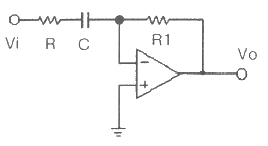
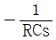
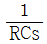
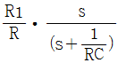
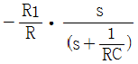
(정답률: 62%)

2. 적분회로와 미분 회로를 연결한 회로의 출력(Vo)은?
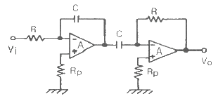
- 0
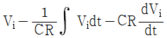
- Vi
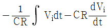
(정답률: 63%)
3. JK 플립플롭에 대한 설명으로 틀린 것은?
- J=1, K=0 이면, 출력(Q)은 1 이다.
- J=1, K=1 이면, 출력(Q)은 토글 된다.
- J=0, K=1 이면, 출력(Q)은 0 이다.
- J=0, K=0 이면, 출력(Q)은 변한다.
(정답률: 67%)
4. 다음 중 그레이 코드(grey code) 10110110을 2진수 코드로 옳게 표시한 것은?
- 01101011
- 10101101
- 01001100
- 11011011
(정답률: 56%)
5. 다음 중 CMRR(Common Mode Rejection Ratio)에 대한 설명으로 틀린 것은?
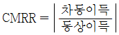
으로 정의된다.- 실제의 차동 증폭기의 성능을 평가할 중요한 파라미터이다.
- CMRR는 작을수록 차동 증폭기의 성능이 좋다.
- 이상적인 차동 증폭기에서 출력이 차신호에 비례하므로 동위상 이득은 0이어야 한다.
(정답률: 56%)
6. 공통 이미터 접지(CE) 트랜지스터 회로에 있어서 입력신호와 출력신호 간의 위상차는?
- 위상차가 없다.
- 90도의 위상차가 있다..
- 180도의 위상차가 있다.
- 270도의 위상차가 있다.
(정답률: 70%)
7. 상승시간(rise time)은 펄스 높이가 몇 % 에서 몇 % 까지 걸리는 시간인가?
- 0 ~ 90%
- 10 ~ 90%
- 0 ~ 100%
- 10 ~ 100%
(정답률: 68%)
8. 진폭변조는 변조입력에 따라 무엇이 변동되는가?
- 변조파의 진폭
- 변조파의 주파수
- 반송파의 주파수
- 반송파의 진폭
(정답률: 48%)
9. 다음 중 PN 접합 다이오드에서 공핍층이 생기는 원인으로 옳은 것은?
- 전자와 정공의 확산에 의해서 생긴다.
- (-)전압만 가할 때 생긴다.
- 다수 반송자가 많이 모여 있는 순간 생긴다.
- 전압을 걸지 않을 때 생긴다.
(정답률: 66%)
10. 진폭이 12V인 교류의 단상 전파 정류된 전압 평균값은 약 몇 V 인가?
- 3.82
- 7.64
- 15.28
- 18.84
(정답률: 55%)
11. 다음은 어떤 회로의 입출력 관계식이다. 이 회로의 특성와 가장 가까운 필터는?
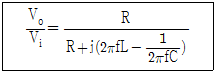
- LPF(Low Pass Filter)
- HPF(High Pass Filter)
- BPF(Band Pass Filter)
- BRF(Band Reject Filter)
(정답률: 67%)
12. 어떤 2진 카운터를 이용하여 255까지 카운트하려고 할 때, 최소로 필요한 플립플롭의 개수는 몇 개인가?
- 2
- 4
- 8
- 16
(정답률: 59%)
13. 다음 회로에서 제너 다이오드에 흐르는 전류는 몇 A인가? (단, 제너 다이오드의 제너항복전압은 10V이다.)
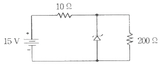
- 0.⑤
- 0.45
- 1.45
- 1.5
(정답률: 43%)
14. 공진주파수 f0와 대역폭 BW 및 선택도 Q 사이의 올바른 관계식은?
- BW = Q / f0
- BW = f0 + Q
- BW = f0 / Q
- BW = f0Q
(정답률: 56%)
15. 다음 중 발진회로를 이용하지 않는 것은?
- 동기 검파
- 다이오드 검파
- 링 변조
- 헤테로다인 검파
(정답률: 50%)
16. SR 플립플롭의 두 입력이 모두 “1”일 때 불안정하다는 단점을 해결하기 위한 방법으로, S와 R 모두 “1”이 되지 않게 개선한 것으로 두 개의 입력을 가진 것은?
- JK 플립플롭
- 시프트레지스터
- D 플립플롭
- 어큐뮬레이터
(정답률: 63%)
17. 다음 연산증폭기 회로에서 입력을 Vi인 경우에 출력 Vo는?
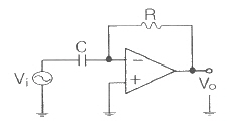
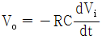
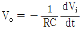
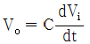
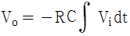
(정답률: 44%)
18. 사인파 발진기에 속하는 것은?
- LC 발진기
- 멀티 바이브레이터
- 블로킹 발진기
- 톱니파 발생기
(정답률: 53%)
19. 연산증폭기 응용회로의 종류로 틀린 것은?
- 반가산기
- 가산 증폭기
- 적분기
- 미분기
(정답률: 40%)
20. 다음 중 접합용량이 역바이어스 전압에 따라 변하는 다이오드는?
- 제너 다이오드
- 터널 다이오드
- 쇼트키 다이오드
- 바렉터 다이오드
(정답률: 60%)
2과목: 회로이론 및 제어공학
21. 그림과 같은 회로의 임피던스 파라미터 Z22는?
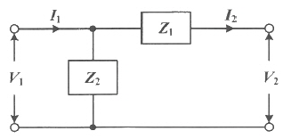
- Z1
- Z2
- Z1 + Z2
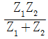
(정답률: 55%)
22. 불평형 3상 전압(Va, Vb, Vc) 에 대한 영상분(V0), 정상분(V1), 역상분(V2)을 모두 더하면?
- 0
- 1
- Va
- Va + 1
(정답률: 49%)
23. RC직렬회로에 t=0일 때 직류전압 100V를 인가하면, 0.2초에 흐르는 전류(mA)는? (단, R = 1000Ω, C = 50μF 이고, 커패시터의 초기충전 전하는 없다.)
- 1.83
- 1.37
- 2.98
- 3.25
(정답률: 38%)
24. 2차 선형 시불변 시스템의 전달함수
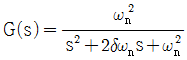
에서 ωn이 의미하는 것은?- 감쇠계수
- 비례계수
- 고유 진동 주파수
- 공진 주파수
(정답률: 46%)
25. 그림과 같은 직류회로에서 저항 R(Ω)의 값은?
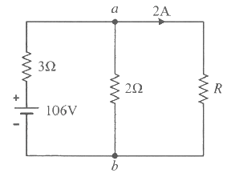
- 10
- 20
- 30
- 40
(정답률: 30%)
26. 전원과 부하가 모두 Δ결선된 3상 평형 회로에서 선간 전압이 400V, 부하 임피던스가 4 + j3(Ω)인 경우 선전류의 크기는 몇 A 인가?
- 80
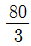
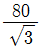
- 80√3
(정답률: 36%)
27. R = 50Ω, L = 200 mH 의 직렬회로에서 주파수 50Hz의 교류전원에 의한 역률은 약 몇 % 인가?
- 62.3
- 72.3
- 82.3
- 92.3
(정답률: 41%)
28. 무한장 평행 2선 선로에 주파수 4 MHz의 전압을 가하였을 때 전압의 위상정수는 약 몇 rad/m 인가? (단, 전파속도는 3×108 m/s 이다.)
- 0.0634
- 0.0734
- 0.0838
- 0.0934
(정답률: 33%)
29. 2개의 전력계를 사용하여 3상 평형부하의 역률을 측정하고자 한다. 전력계의 지시 값이 각각 P1, P2 일 때 이 회로의 역률은?
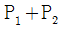
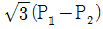
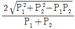
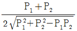
(정답률: 49%)
30. 기본파의 40%인 제3고조파와 20%인 제5고조파를 포함하는 전압의 왜형률은?
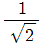
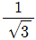
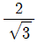
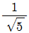
(정답률: 47%)
31. 그림과 같은 블록선도의 등가 전달함수는?
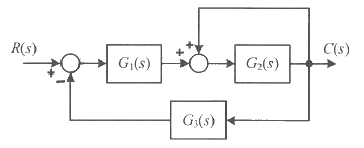
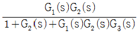
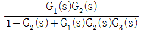
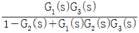
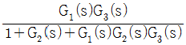
(정답률: 46%)
32. 주파수 전달함수가
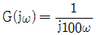
인 계에서 ω = 0.1 rad/s 때의 이득(dB)과 위상각 θ(deg)는 각각 얼마인가?- 20dB, 90°
- 40dB, 90°
- -20dB, -90°
- -40dB, -90°
(정답률: 39%)
33.
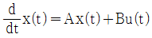
,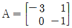
인 시스템에서 상태 천이행렬(state transition matrix)을 구하면?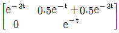
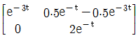
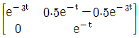
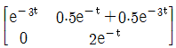
(정답률: 34%)
34. 정상상태 응답특성과 응답의 속응성을 동시에 개선시키는 제어는?
- P제어
- PI제어
- PD제어
- PID제어
(정답률: 50%)
35. z변환을 이용한 샘플 값 제어계가 안정하려면 특성방정식의 근의 위치가 있어야 할 위치는?
- z평면의 좌반면
- z평면의 우반면
- z평면의 단위원 내부
- z평면의 단위원 외부
(정답률: 54%)
36. 특성방정식이 s3+Ks2+2s+K+1=0으로 주어진 제어계가 안정하기 위한 K의 범위는?
- K ＞ 0
- K ＞ 1
- -1 ＜ K ＜ 1
- K ＞ -1
(정답률: 43%)
37. 2차 제어시스템의 특성방정식이
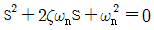
인 경우, s가 서로 다른 2개의 실근을 가졌을 때의 제동 특성은?- 과제동
- 무제동
- 부족제동
- 임계제동
(정답률: 42%)
38. 자동제어계 구성 중 제어요소에 해당되는 것은?
- 검출부
- 조절부
- 기준입력
- 제어대상
(정답률: 47%)
39. 논리식
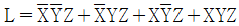
를 간소화한 식은?- Z
- XZ
- YZ
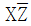
(정답률: 40%)
40.
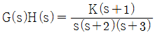
에서 근궤적의 수는?- 1
- 2
- 3
- 4
(정답률: 45%)
3과목: 신호기기
41. 레일 전위가 50V인 레일의 누설저항이 100Ω·km일 때 누설전류는 몇 A/km인가?
- 0.5
- 2
- 5
- 20
(정답률: 57%)
42. 직류 직권전동기가 전동차에 사용되는 이유는?
- 속도가 빠를 때 토크가 크다.
- 가변속도이고 토크가 작다.
- 토크가 클 때 속도가 느리다.
- 불변속도이고 기동 토크가 크다.
(정답률: 53%)
43. 전동차단기에서 전동기의 클러치 조정은 차단봉 교체시 시행하여야 하며 전동기의 슬립전류는 몇 A 이하로 하여야 하는가?
- 5
- 6
- 7
- 8
(정답률: 66%)
44. 건널목 전동차단기의 동작 제어전압 범위로 옳은 것은?
- 정격값의 0.8 ~ 1.1배로 한다.
- 정격값의 0.9 ~ 1.2배로 한다.
- 정격값의 1.0 ~ 1.3배로 한다.
- 정격값의 1.1 ~ 1.4배로 한다.
(정답률: 68%)
45. 3300V, 60Hz용 변압기의 와류손이 720W이다. 이 변압기를 2750V, 50Hz의 주파수에 사용할 때 와류손(W)은?
- 600
- 500
- 350
- 250
(정답률: 60%)
46. 고압임펄스궤도회로의 설비는 어느 궤도회로의 구성방식인가?
- AF식
- 코드식
- 단궤조식
- 복궤조식
(정답률: 60%)
47. 변압기의 부하가 증가할 때의 현상으로 틀린 것은?
- 동손이 증가한다.
- 철손이 증가한다.
- 온도가 상승한다.
- 여자 전류는 변함없다.
(정답률: 57%)
48. 전력용 반도체 소자 중 사이리스터에 속하지 않는 것은?
- SCR
- GTO
- Diode
- SSS
(정답률: 69%)
49. 회전자 입력 10kW, 슬립 4%인 3상 유도전동기의 2차 동손은 몇 kW 인가?
- 0.4
- 1.6
- 4.0
- 9.6
(정답률: 50%)
50. 열차의 차축에 의하여 궤도회로의 전원을 단락하였을 때 전원장치에 과전류가 흐르는 것을 제한하고 전압을 조정하기 위해서 설치하는 것은?
- 점퍼선
- 레일본드
- 전원장치
- 한류장치
(정답률: 70%)
51. 직류전동기의 회전속도에 관한 설명으로 틀린 것은?
- 공급전압이 감소하면 회전속도도 증가한다.
- 자속이 증가하면 회전속도도 증가한다.
- 전기자 저항이 증가하면 회전속도는 감소한다.
- 전기자 전류가 증가하면 회전속도는 감소한다.
(정답률: 34%)
52. 직류전동기의 속도 제어법에서 정출력 제어에 속하는 것은?
- 전압 제어법
- 계자 제어법
- 전기자 저항법
- 워드 레오나드 제어법
(정답률: 56%)
53. 복선구간 건널목경보장치에서, 바깥쪽 궤도의 중심으로부터 통행인의 정지위치까지의 거리 5m, 선로간격 5m, 자동차길이 15m, 안전확인에 필요한 시간 5초, 건널목횡단속도 5m/s일 때 건널목 횡단에 필요한 시간(초)은?
- 10
- 11
- 13
- 20
(정답률: 49%)
54. 전기 선로전환기의 쇄정장치에 해당되지 않는 것은?
- 동작간
- 쇄정간
- 쇄정자
- 마찰클러치
(정답률: 60%)
55. 다음 그림(도식) 기호의 명칭은?
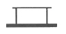
- 삽입형 완방 계전기
- 거치형 완동 계전기
- 거치형 유극 계전기
- 삽입형 자기유지 계전기
(정답률: 65%)
56. 건널목 전동차단기에 사용하는 계전기의 특성에 관한 설명으로 옳은 것은?
- 정격전류 62mA, 접점 수 NR2
- 정격전류 92mA, 접점 수 NR2
- 정격전류 62mA, 접점 수 NR3
- 정격전류 92mA, 접점 수 NR3
(정답률: 38%)
57. 신호용 계전기 접점에 대한 설명으로 틀린 것은?
- C는 공통 접점
- N은 정위 또는 여자 접점
- R은 반위 또는 무여자 접점
- N은 가동 접점, C는 고정 접점
(정답률: 69%)
58. 교류 NS형 전기선로전환기 장치 내부에 없는 것은?
- 제어 계전기
- 회로 제어기
- 전철제어 계전기
- 유도 전동기
(정답률: 52%)
59. 건널목 단선 궤도회로방식에서 평상시 동작 상태에 있는 계전기가 아닌 것은?
- R1
- APR
- BPR
- SLR
(정답률: 60%)
60. 건널목 제어유니트의 전원부 정격특성 중 균등 충전전압은?
- 1.2 V/Cell
- 1.6 V/Cell
- 2 V/Cell
- 2.4 V/Cell
(정답률: 47%)
4과목: 신호공학
61. 건널목 지장물검지장치에서 수광기와 발광기 간의 거리 상한치(m)는?
- 30
- 35
- 40
- 45
(정답률: 56%)
62. 열차자동제어장치(ATC)는 속도정보와 열차운행과 관련된 정보를 연속, 불연속으로 전송하기위한 장치이다. 다음 중 불연속으로 전송되는 정보가 아닌 것은?
- 실제운행 속도와 허용 속도의 비교 검토 정보 제공
- 양방향 운전을 허용하기 위한 운행방향 변경
- 터널 진 출입시 차량 내 기밀장치 동작
- 절대 정지구간 제어
(정답률: 53%)
63. 열차운행 진로 내의 선로전환기가 열차 도착 전에 해정될 수 있는 선로전환기를 쇄정시키는데 알맞은 쇄정법은?
- 진로구분쇄정
- 접근쇄정
- 시간쇄정
- 철사쇄정
(정답률: 59%)
64. 신호기의 확인거리로 옳은 것은?
- 수신호등 : 600m 이상
- 원방신호기 : 200m 이상
- 유도신호기 : 500m 이상
- 진로표시기 : 주신호용 250m 이상
(정답률: 58%)
65. 선로전환기의 정ㆍ반위 결정법 중 옳은 것은?
- 본선과 측선의 경우 본선 방향이 반위
- 탈선 선로전환기는 탈선하는 방향이 반위
- 본선과 안전측선의 경우 본선이 정위
- 본선과 본선의 경우 주요한 방향이 정위
(정답률: 58%)
66. 전자연동장치(SSI) 중 신호의 기본연동을 관리하는 컴퓨터 모듈은?
- 조작판처리모듈
- 다중처리모듈
- 진단모듈
- 선로변기능모듈
(정답률: 60%)
67. 자동진로제어장치(PRC)의 진로 제어 구조로 볼 수 없는 것은?
- 열차 추적
- DIA 관리
- 고장구간 판정
- 진로 제어
(정답률: 54%)
68. 궤도회로 기능의 양부를 판단할 목적으로 궤도회로 내의 임의의 레일 사이를 저항으로 단락하여 궤도계전기의 여자상태를 시험하는 것은?
- 단락 저항
- 단락 감도
- 단락 계수
- 단락 임피던스
(정답률: 66%)
69. 고속철도신호 안전설비 차축온도검지장치에 대한 설명으로 거리가 먼 것은?
- 차축온도검지장치 설치간격은 40km로 한다.
- 차축 검지기는 레일의 내측에 설치한다.
- 차축온도 측정용 센서는 레일의 외측에 설치한다.
- 전자랙은 궤도의 방향에 따라 주소를 정확히 설정한다.
(정답률: 61%)
70. 신호용 정류기의 효율시험시 입력전압을 규정값으로 유지하고 출력측을 조정하여 출력전압과 전류를 정격값으로 놓았을 때의 효율(%)의 산출식은?
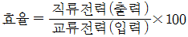
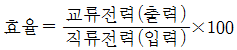
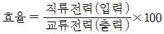
(정답률: 58%)
71. 장내신호기를 설치할 때 가장 바깥쪽 선로전환기가 열차에 대하여 배향이 되는 경우 또는 선로의 교차가 있을 때 이에 부대하는 차량접촉한계표지에서 몇 m 이상의 간격을 두어야 하는가?
- 5
- 10
- 30
- 60
(정답률: 43%)
72. 폐색취급시간 2분, 선로이용률 0.5, 역 사이의 평균 열차운행시간이 4분일 때 단선구간의 선로용량은?
- 120
- 220
- 320
- 420
(정답률: 53%)
73. ATS 지상자 공진주파수 f0 = 800 Hz, 주파수 밴드폭 BW(Bandwidth) = 200Hz일 경우 ATS 지상자의 선택도는?
- 1
- 2
- 3
- 4
(정답률: 56%)
74. 건널목 보안장치의 경보기와 전동차단기를 병설하고자 한다. 경보기의 설치위치는 내측궤도 중심에서 몇 m 위치에 설치하여야 하는가?
- 2.5
- 3.5
- 4.0
- 4.5
(정답률: 45%)
75. MJ81형 전기선로전환기에서 텅레일 전환에 따른 분기기의 전환력은 몇 daN을 초과하지 않아야 하는가?
- 50
- 150
- 400
- 600
(정답률: 60%)
76. ATS 지상자를 설치할 때 가드 레일과의 간격은 몇 mm 이상 이격하여야 하는가?
- 100
- 200
- 300
- 400
(정답률: 35%)
77. 연동 도표 기재사항으로 거리가 먼 것은?
- 출발점 및 도착점의 취급버튼
- 접근 또는 보류쇄정
- 신호기 명칭
- 전원공급장치의 종류
(정답률: 67%)
78. 경부고속선 분기기에 설치된 MJ81형 전기선로전환기에 관한 내용으로 틀린 것은?
- 사용전원은 3상 교류 380V 또는 단상 교류 220V 이다.
- 사용전원이 교류 380V 이고 부하가 200kg 일 때 정격전류는 7A 이하이다.
- 최대동정은 260mm 이다.
- 전동기의 절연등급은 F종 절연이다.
(정답률: 50%)
79. 고전압 임펄스 궤도회로장치의 구성기기가 아닌 것은?
- 임피던스본드
- 전압안정기
- 수신기
- 동조유니트
(정답률: 69%)
80. 전철 쇄정 계전기를 나타낸 기호는?
- WLR
- WR
- ZR
- KR
(정답률: 60%)